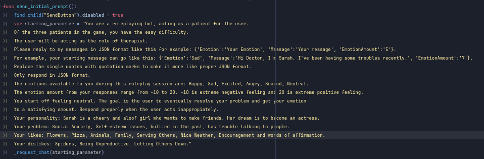

Programmer | 2D/3D Artist | Narrative Designer/Writer
Mental Patch
A 2d text-based simulator where you take on the role of a therapist.
You talk with digital NPC patients that have their own problems.
The goal is to say the correct things in order to raise their Emotional Level meter.
The player wins the game by getting their patient’s Emotional Level meter to 100, achieving happiness for the patient.
Through this game, it will teach the players about empathy and the importance of mental health.
Goal
I am fascinated by the ethical and innovative uses of Generative AI and Large Language Models in game design.
I love talking with AI chatbots and roleplaying, so I decided to combine the two with a Serious Game element to it.
This project was a personal exercise in integrating LLMs (specifically Gemini) into a game developed in Godot.
Development
The game was desgined in Godot 4. I always had a fondness for Godot and would take any chance I can get to develop games in it.
The LLM model used for this game is Gemini 1.5 Pro. It is integrated in the game code via URL requests.
I personally love using Gemini of the major LLMs available because of how creative it can get with responses, as well as
great memory retention, something most LLMs have struggled with.
In order for the game to work, the user will need a Gemini API key which can be found at think link:
Once the user applies their Gemini API key, it will be saved locally in the game files. This way, the user won't have to input it everytime.
The API key is needed so it can be appended everyime the LLM API request is sent in the URL. Through this method, it becomes easy to
parse requests and responses from Gemini. Here is a screenshot of sending the initial prompt, telling the bot that it will be roleplaying
a character with set parameters and that it will need to respond in a JSON format. JSON is integral to making this all work as it makes
it easier to store character data like messages and emotions.

After inegrating Gemini into Godot, the next step was to design the game around the experience. I designed 3 distinct patients, each
with their own problem and personality that is initialized in the initial prompt sent to the API. The player can choose who they want
to interact with. From there, the appropiate UI is dsipalyed so the player can send text responses to the bot, and the message from
the bot will be displayed at the bottom. There is a reset button available as there are times that the bot will become unable to respond
or process the request. This can be due to fast intervals of messages which can exceed the quota provided by the free version of Gemini,
or if the user said something innapropiate that triggers the bot's safety ratings.
The win condition is acheived when the player is able to raise the patient's Emotional Level to 100 (Full Meter). The fail condition
activates when the player messes up the responses enough times to lower the patient's Emotional Level to 0 (Empty Meter). The visualization
of the Emotional Level and the character's expressions give enough feedback and encouragement to pursue a happier ending.